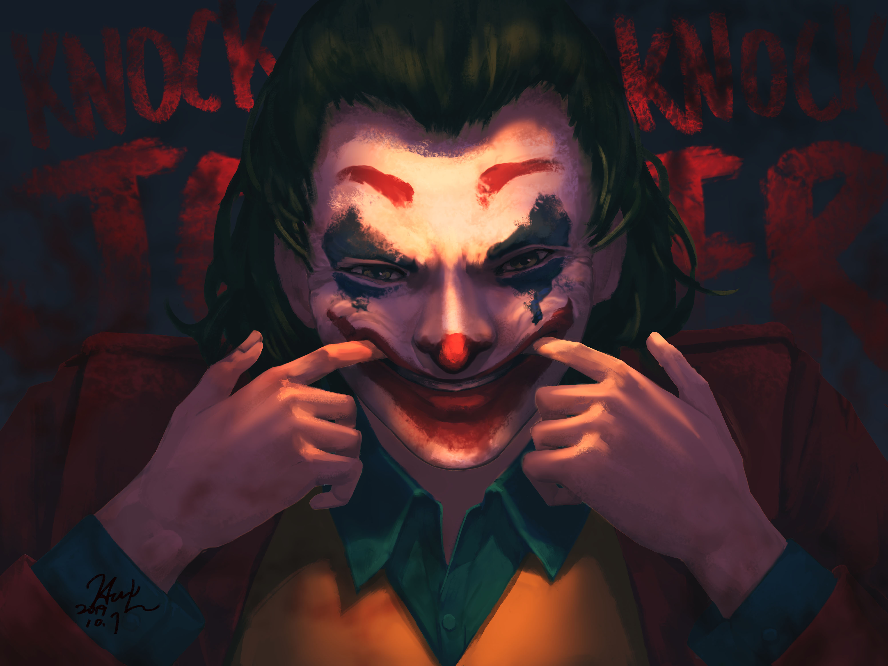

YG Entertainment's TREASURE Hyunsuk Hit With Major Criticism For His Behavior In New Video

TREASURE's leader Hyunsuk is facing intense criticism after a new video surfaced showing behavior that many fans say has "sabotaged the group's popularity."
The clip has divided the fandom and sparked conversations about idol conduct both on and off camera.
What The Video Shows
Critics point to what they describe as dismissive body language and comments directed at staff. Supporters argue the footage has been taken out of context.
Impact on TREASURE
The controversy comes at a challenging time for TREASURE, who have been working to expand their international presence.
YG Entertainment has not yet issued an official statement. TEUME remain divided on the situation.